Block Breakout is a clone of the classic Breakout game, written in C++ and Unreal Engine 4's Blueprints Visual Scripting language. The game was development practice
to solidify Mat's UE4 C++ and UE4 GitHub Collaboration skills. The game features three difficulty settings, bonus pickups and a persistent highscore. While simple, the game was excellent
practice.
Combat Descent is a third-person Battle Royale shooter in which players, equipped with jetpacks and skydiving from an orbital space station, must descend through
a complex cavern system to reach a portal located within. Players collect equipment and weapons from the map while using their jetpacks and flying vehicles to gain the tactical advantage.
The map is split in to layers by massive dividing floors which have a few sealed doorways scattered across them. As the solar radiation closes around the players, they are
forced to use panels to open these sealed doorways and travel to deeper layers of the map. Players will have to decide whether to risk their lives to open a large door, and receive a tactical
advantage for doing so, or wait and allow an enemy to open the door so that they can enter unseen. The player's jetpacks give them a significant amount of mobility, allowing them to jetpack vertically up and
down through the caverns or to flip to a horizontal position in midair and pursue enemies in jetpack dogfighting action!
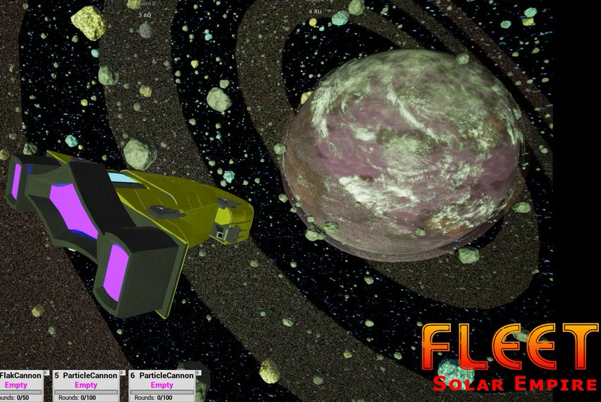
FLEET: Solar Empire is a strategic spaceship and fleet command game in which players stream themselves on Twitch, where their viewers can join the game as crew members aboard their spaceships.
Viewers can control their respective crew members through Twitch chatroom commands, allowing them to board enemy ships, man fighter craft and mine resources from nearby asteroids. Crew members can gain experience
and levels which can be applied to their different stats. The player can upgrade their fleet's ships and build new vessels from stations where crew members can be assigned as station administrators to oversee
station mining and manufacturing operations. Players will have to build their fleets and fortifications to fight against an enemy AI that holds control over the local solar system. Players can travel to and from
procedurally generated solar systems across a galaxy.
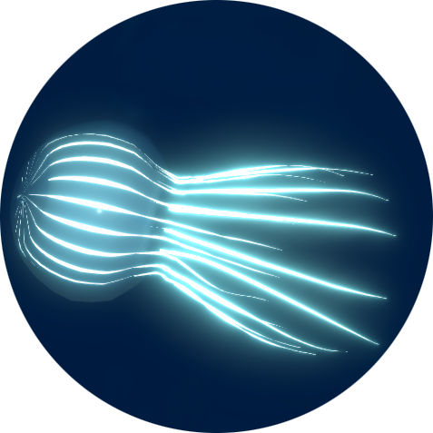
Open Ocean VR was a capstone project developed by Mathew Tomberlin under the mentorship of Kryzstof Pietroszek at California State University, Monterey Bay alongside two programmers and a game designer. The game
was an immersive, educational VR game in which the player, a diver, must identify marine creatures by selecting them with the Oculus Move controller. Mathew Tomberlin was responsible for designing, modeling, rigging and animating
the 3D creatures, programming their movement and spawning behaviors, programming the game event system in which a game character presents the player with quests, and level design tools. The game's creatures each have a different
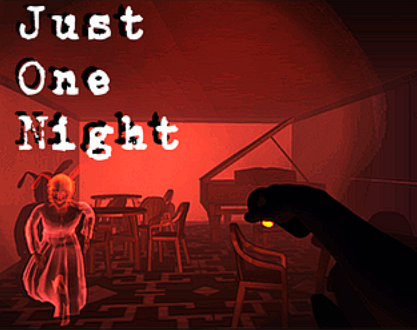
Just One Night was a VR horror game developed by a team of CSUMB student programmers and game designers in collaboration with Polish 3D character and environmental artists and sound designers. The game was
designed for use with the Oculus Rift and Leap Motion Controller, allowing the player to move their VR avatar by moving their right fist forward/backward while interacting with the environment with their left hand (picking up keys,
opening doors, etc). This immersive movement technique, known as the Gauntlet Travel Technique was developed by Mathew Tomberlin (and published for IEEE VR 2017).
The player holds a flashlight in their right hand, which tends to break and must be repaired by banging the left fist against the right hand. Ghosts appear throughout the mansion and the player must shine their
flashlight at the ghosts to damage and destroy them, but the flashlight also runs out of batteries and the player will have to scavenge for them. The player has to find keys throughout the house to unlock the different rooms and make their way out.
Replication Extermination is a game designed for the One Mechanic Game Jam 3 which definitely ended up with more than one mechanic. The game is a top-down stealth shooter, akin to Metal Gear Solid,
in which the player must use avoid killer robots detection while trying to destroy each of their power cores. The player's gunfire draws the robots detection and they have very limited ammo, leading to tense situations dodging robots. Destroying robots
causes them to drop credits which the player can redeem for upgrades to their health, weapon damage or ammo at work benches near the robot power cores. The level is procedurally generated as the player advances, leading to different playthroughs
with each game!
The Last Light is a top-down, squad-based stealth shooter designed for the Epic MegaJam 2017. The level layout is procedurally generated
and randomized on each play through. Players control a squad of soldiers by clicking to move and right clicking to target enemy alien squads. The squad must search the map for civilians to rescue, who will follow the squad until the player calls
in a helicopter to evacuate the squad and civilians. The theme of the game jam was "However vast the darkness, we must supply our own light", a quote by Stanley Kubrick, and so the game takes place in the dark night, in a pitch black city, with only
the squad's flashlights to illuminate the environment.
Balance Bridge is an education and research game developed soely by Mathew Tomberlin for the University of Waterloo that uses the Neurosky Mindwave EEG Sensor to read the player's attention levels and calmness levels
as the play the game and adjust the game's difficulty setting at the end of each level. Using the player's attention level, the game adapts the difficulty to be easier if the player was paying attention to the game but still failed the level and harder if the player was not
paying attention and succeeded at the level. The game itself was a simple balancing game, in which the player has to drop blocks onto one or both sides of the bridge in order to balance it. Certain places on the bridge are blocked on each level and the player can use
earned "Mirror Points" to unblock those positions, allowing them to mirror the dropped weight on the opposite side. Every action the game or player takes is output to a text log, along with the player's attention levels, time and their self-assessed challenge rating of each level. A VR version
prototype was developed to see if player interest increased in an alternate medium.
Created as a final project for the Intro to Digital Games (CST 320) class at CSUMB. The game was created entirely in C++ and DirectX 11. It included a dedicated server and client applications which allowed up to 20 players to connect and play a 10 vs 10 Capture the Flag game. Players had
guns with explosive ammunition that launched players across the map and an ability to skii across the sloping terrain, inspired by skiing in the Tribes game series. Though networking and gameplay were functional, the game itself was, in the end, not quite enjoyable due to
excessive visual lag. It was, however, an excellent primer for fundemental dedicated server architecture.
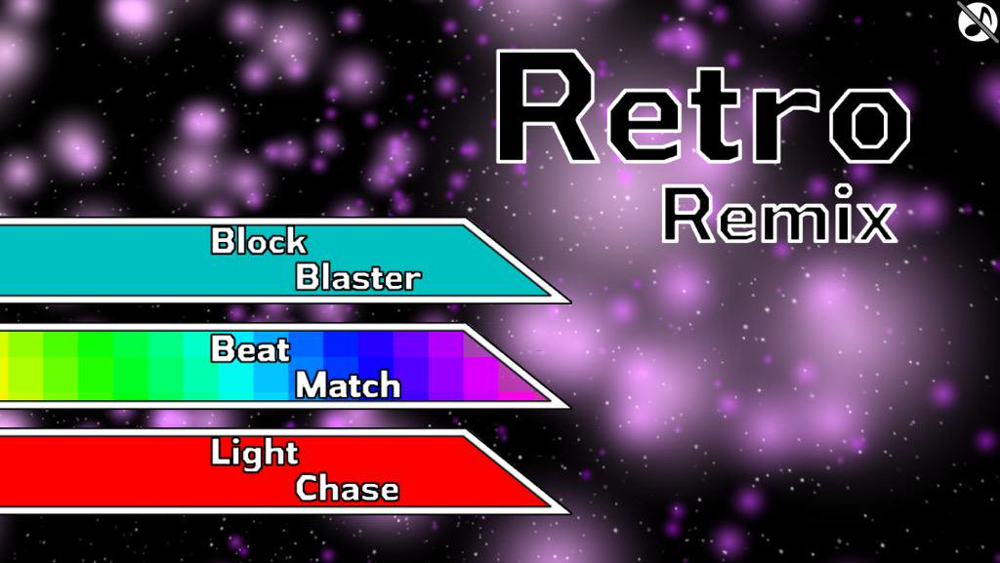
Retro Remix was Mat's second published iOS game and was a vast improvement on the first. Retro Remix itself was a collection of 3 classic minigames, each with their own special flairs. Block Blaster was a form of Breakout with 15 unlockable difficulty settings
and accelerometer support. Powerups throughout the game made the ball faster or slower. Beat Match was similar to the game Simon, except that the different difficulty settings made the game significantly easier (for children) or significantly harder (for adults). Light Chase
was a remake of the 90's classic handheld game, Lights Out, in which players must try to turn all of the lights on (or off) by pressing on them, which toggles all the adjacent lights as well. The game included a number of predefined patterns and was very difficult to master. Retro Remix
was released on the iOS App Store in 2015.
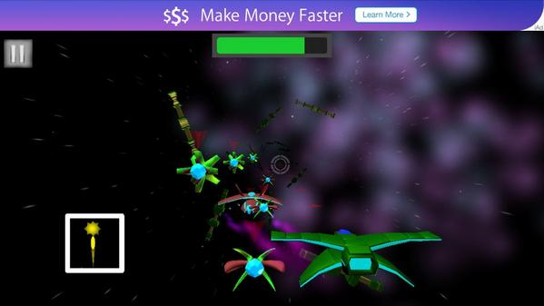
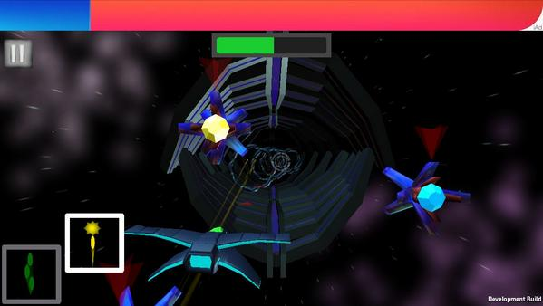
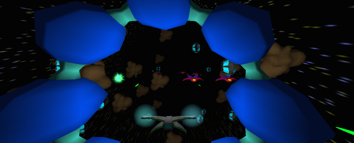
Attack-Run Alpha was Mat's first published iOS game. Attack-Run Alpha was a simple Starfox-like Shoot 'Em Up in which the player must pilot their starfighter through asteroid fields, hunt down approaching enemy ships and fight off challenging bosses. The levels themselves included
randomized elements, including enemy position and appearance. The minibosses and bosses at the end of each level featured weakpoints that the player had to target. The game used the accelerometer to control the player's craft, allowing the player to pilot their ship by rotating their phone. The game was fun
but featured a number of crippling bugs. It was, however, an excellent first step in to the world of iOS App Store publishing.

 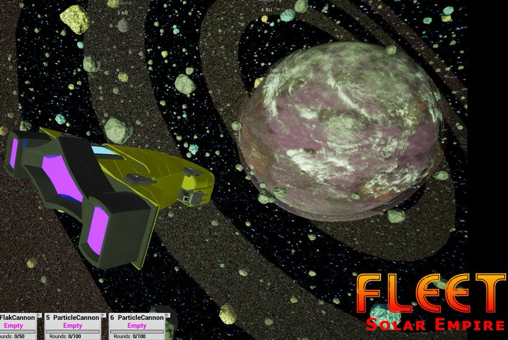
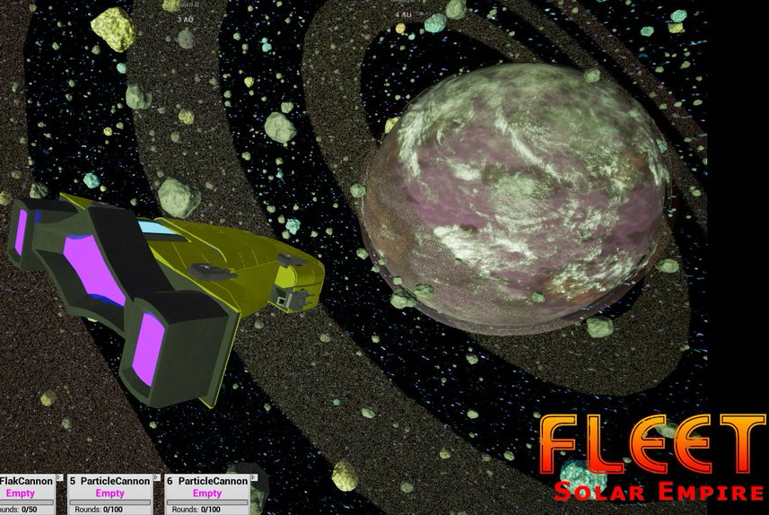

 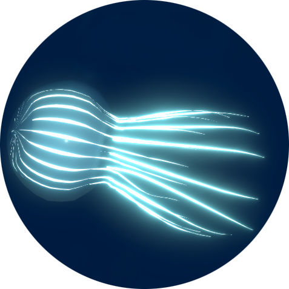
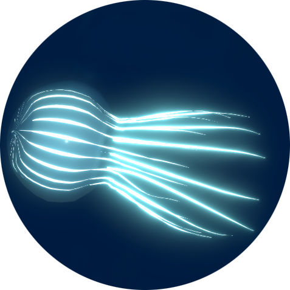